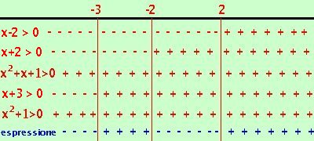

Esercizio
risolviamo la disequazione:
x4 + x3 -3x2 - 4x - 4
------------------------------
x3 + 3x2 + x + 3 |
< 0 |
Scomponiamo in fattori sia il numeratore che il denominatore
- Scomposizione del numeratore
Considero il polinomio associato
x4 + x3 - 3x2 - 4x - 4 =
devo scomporlo in fattori; sono 5 termini, non riesco a fare dei raggruppamenti, quindi applico la scomposizione di Ruffini
provo a scomporre per:
(x-1), P(1)= 14 + 13 -3·12 - 4·1 - 4 = 1 + 1 - 3 - 4 - 4  0 0
(x+1), P(-1)= (-1)4 + (-1)3 -3·(-1)2 - 4·(-1) - 4 = 1 - 1 - 3 + 4 - 4 0
(x-2), P(2)= 24 + 23 -3·22 - 4·2 - 4 = 16 + 8 - 12 - 8 - 4 = 0
quindi (x-2) e' un fattore: divido per (x-2)
faccio la divisione di Ruffini
| |
 |
1 |
1 |
-3 |
-4 |
|
-4 |
| 2 |
|
2 |
6 |
6 |
4 |
 |
|
|
|
|
|
| |
1 |
3 |
3 |
2 |
0 |
Ottengo quindi
x4 + x3 - 3x2 - 4x - 4 = (x-2)(x3 + 3x2 + 3x + 2) =
Continuo la scomposizione del secondo fattore: sono 4 termini:
- Non e' il cubo di un binomio
- non e' un raccoglimento parziale
- non mi sembra un raggruppamento
- quindi applico la scomposizione di Ruffini
provo a scomporre per l'ultimo fattore che era valido
(x-2), P(2)= 23 +3·22 + 3·2 + 2 = 8 + 12 + 6 + 2 0
(x+2), P(-2)= (-2)3 +3·(-2)2 +3·(-2) + 2 = -8 + 12 - 6 + 2 = 0
Quindi (x+2) e' un fattore; divido per (x+2)
| |
|
1 |
3 |
3 |
|
2 |
| -2 |
|
-2 |
-2 |
-2 |
|
|
|
|
|
| |
1 |
1 |
1 |
0 |
quindi ottengo
x4 + x3 - 3x2 - 4x - 4 = (x-2)(x3 +3x2 + 3x + 2) = (x-2)(x+2)(x2+x+1)
Ora provo a scomporre l'ultimo fattore
- Non e' il quadrato di un binomio
- Non e' un trinomio notevole
- Non si puo' scomporre con Ruffini (i fattori possibili sono +1 e -1 che abbiamo gia' provato)
L'ultimo fattore non e' scomponibile.
- Scomposizione del denominatore
Considero il polinomio associato
x3 + 3x2 + x + 3=
sono 4 termini:
- Non e' il cubo di un binomio
- Puo' essere un raccoglimento parziale
provo a scomporre come raccoglimento parziale
x3 + 3x2 + x + 3 = x2(x+3) + 1(x+3) = (x+3)(x2 + 1)
L'ultimo fattore (2 termini) come somma di quadrati non e' scomponibile
quindi ottengo
(x-2)(x+2)(x2+x+1)
-------------------------
(x+3)(x2 + 1) |
< 0 |
poniamo ogni fattore maggiore di zero
- x - 2 > 0
x > 2
- x + 2 > 0
x > -2
- x2+x+1 > 0
sempre verificato (delta minore di zero)
- x + 3 > 0
x > -3
- x2 + 1 > 0
sempre verificato (delta minore di zero)

Adesso riporto i risultati su un grafico indicando con un un + dove ogni disequazione e' verificata e con un - dove non e' verificata e faccio il conto dei segni:
devo prendere gli intervalli dove il prodotto ed il quoziente dei segni dei fattori (cioe' il segno dell'espressione) risulta negativo.
Ottengo come risultato:
x < -3 U -2 < x < 2
Nota che avrei potuto tralasciare i due fattori con delta minore di zero perche',essendo positivi, non influiscono sul segno del risultato
|